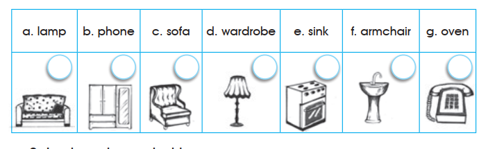
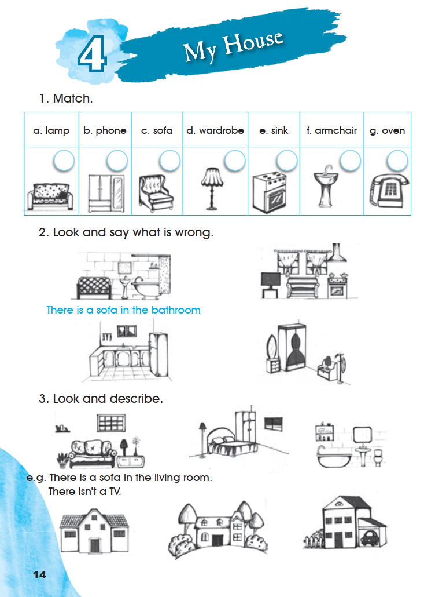
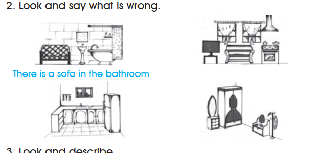
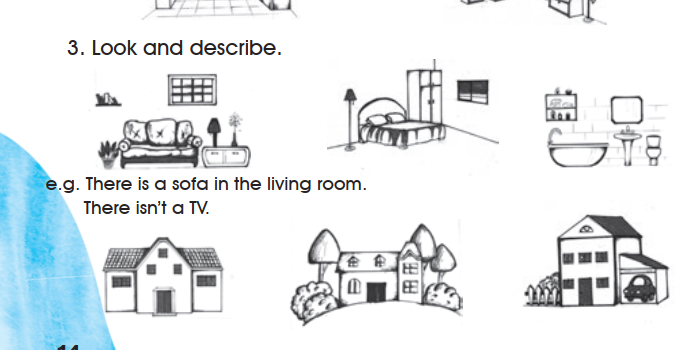
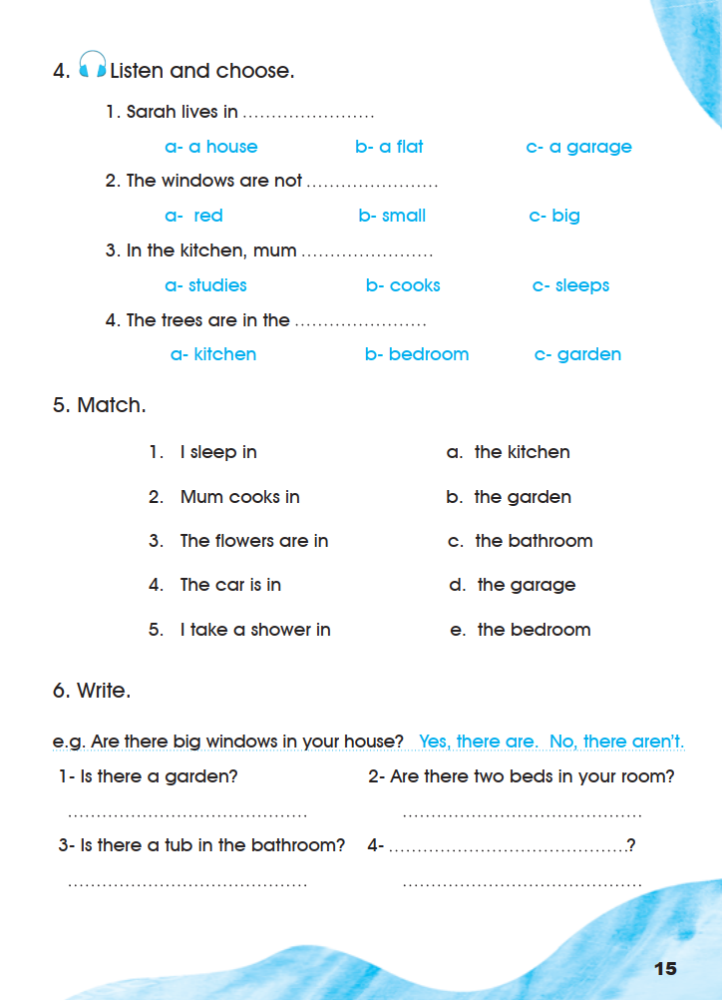
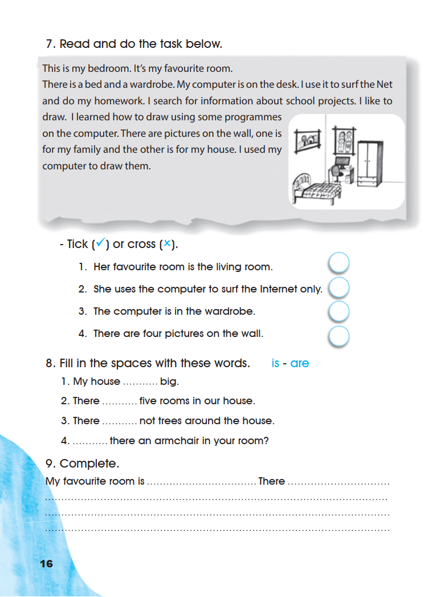

Workbook
My House · pages 14–16
Exercises 1–9 follow the supplied Workbook pages. Listening tasks remain visible but unscored because the recording was not supplied.
1. Match.
a. lamp b. phone c. sofa d. wardrobe e. sink f. armchair g. oven

Open the original source · Workbook · p. 14
Upload 10, preserved unchanged. SHA-256 and source mapping are recorded in the source manifest.

2. Look and say what is wrong.

There is a sofa in the bathroom. printed example
The remaining room descriptions are open speaking responses. No single answer is supplied by the printed page.
3. Look and describe.

e.g. There is a sofa in the living room. There isn’t a TV.
Describe what you see. The book prints one example and does not give a fixed description for the other pictures.
4. Listen and choose.
5. Match.
6. Write.
e.g. Are there big windows in your house? Yes, there are. No, there aren’t.
Answers depend on the pupil’s home, so no personal answer is supplied.
Open the original source · Workbook · p. 15
Upload 11, preserved unchanged. SHA-256 and source mapping are recorded in the source manifest.

7. Read and do the task below.
This is my bedroom. It’s my favourite room. There is a bed and a wardrobe. My computer is on the desk. I use it to surf the Net and do my homework. I search for information about school projects. I like to draw. I learned how to draw using some programmes on the computer. There are pictures on the wall, one is for my family and the other is for my house. I used my computer to draw them.
Open the original source · Workbook · p. 16
Upload 12, preserved unchanged. SHA-256 and source mapping are recorded in the source manifest.

8. Fill in the spaces with these words.
is – are
9. Complete.
Personal writing. The two sentence openings and the following dotted lines are kept open; no answer is supplied.
Practice answers are saved in this browser only.